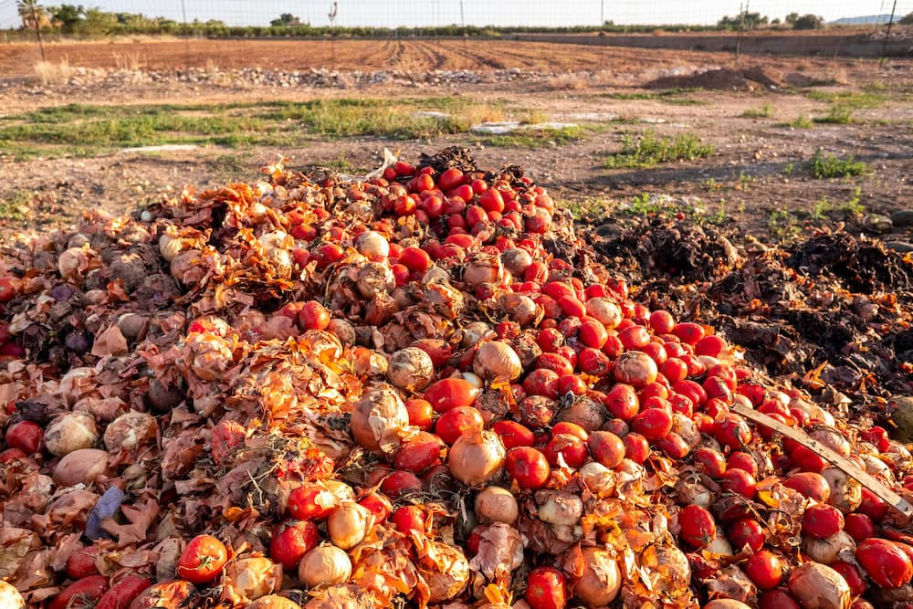

Where Does Our Food Go to Waste? Tracing Loss From Farm to Table
Almost a third of all food produced worldwide never gets eaten. We trace exactly where it disappears, from overproduction on farms, to breakdowns in cold storage, to what ends up scraped off a restaurant plate, and what each stage tells us about fixing the system.
Read Analysis →